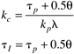
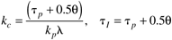

| [ Team LiB ] |
|
M6.5 IMC-Based PID ControlRecall from Chapter 9 that Padé approximations for dead time could be used to develop a IMC-based PI and PID controllers for first-order + time-delay systems. Here, we compare the gain and phase margins for an IMC-based PI controller (using the "improved" settings) for various values of l. The improved IMC-based PI settings are as follows:  Problem 4. For the IMC-based PI (improved) settings, find the value of l that leads to a gain margin of 2.5. Also, find the value of l that leads to a phase margin of 75°. Compare the time-domain closed-loop responses for these two systems (always include plots of the manipulated inputs). Hint: Recall that the improved IMC-based PI settings for first-order + time-delays systems are  For l = 10, we find
» gc = tf([1.25*12.5 1.25],[12.5 0])
Transfer function:
15.62 s + 1.25
--------------
12.5 s
» [mag,phase,w] = bode(gc*fodt);
» [Gm,Pm,Wco,Wpm] = imargin(squeeze(mag),squeeze(phase),w)
Gm = 2.63261419901939
Pm = 63.19455846288847
Wco = 0.32379172211747
Wpm = 0.11488259758305
Here, we see that the gain margin requirement is satisfied. Increase l until the phase margin is satisfied. Problem 5. Compare the Ziegler-Nichols PI, Tyreus-Luyben PI and IMC-based improved PI (with l = 10 minutes) control performance in time-domain simulations. |
| [ Team LiB ] |
|